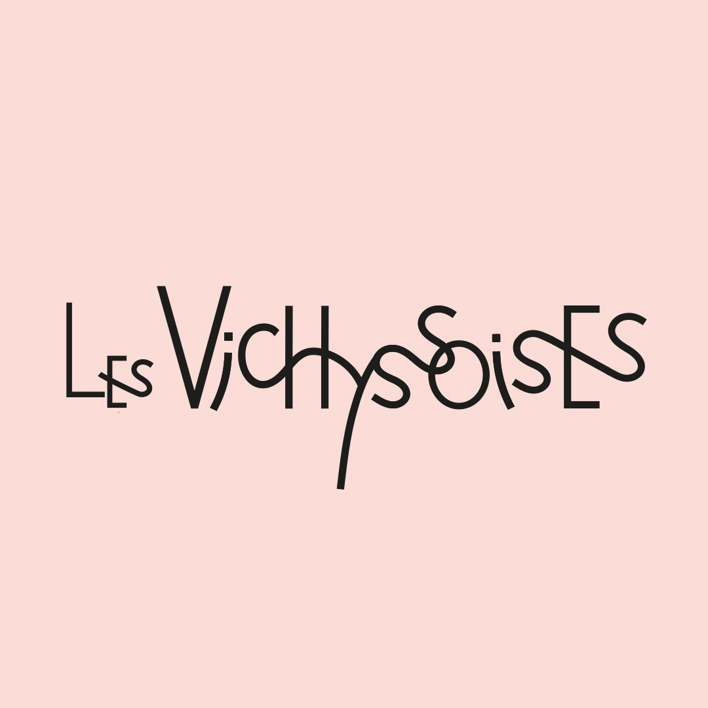
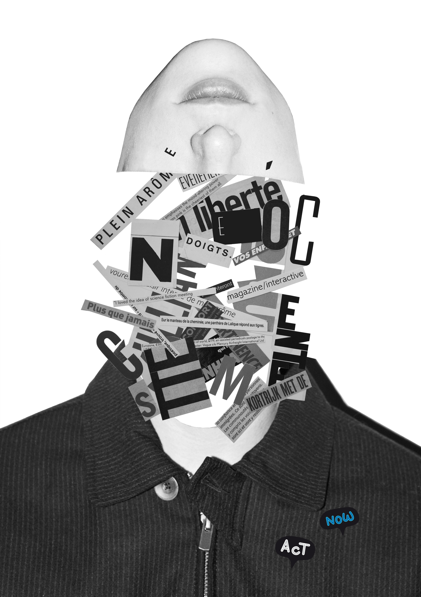
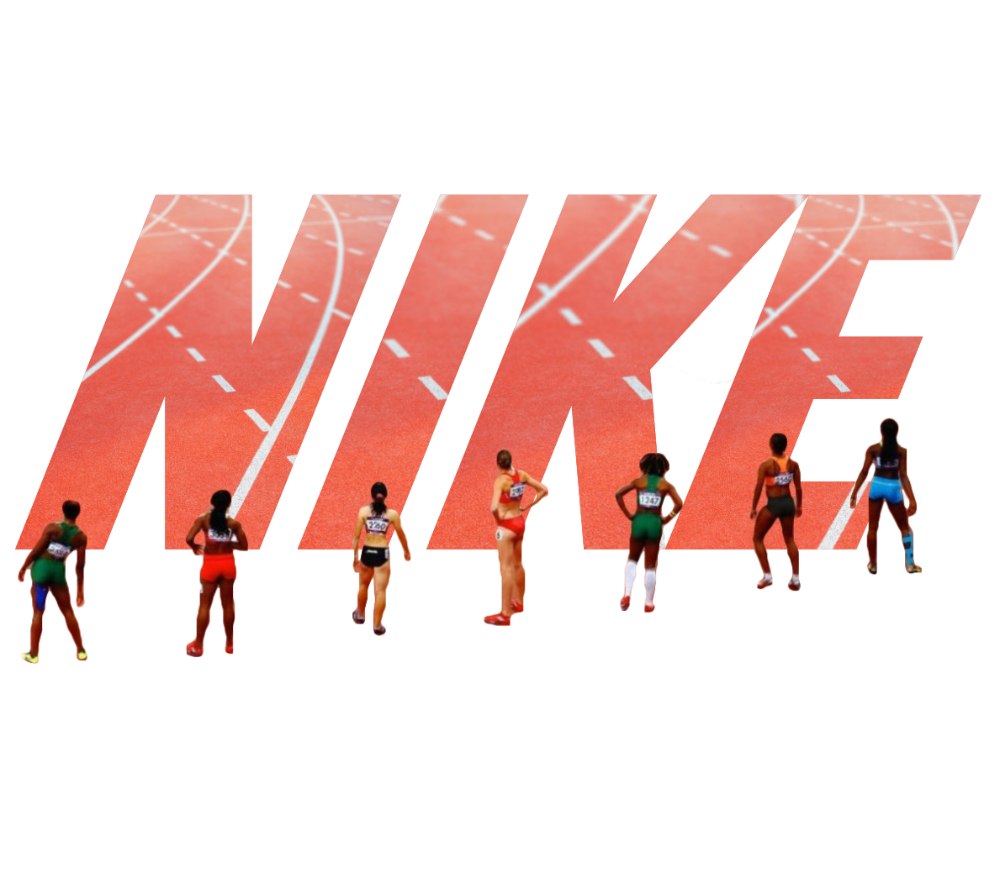
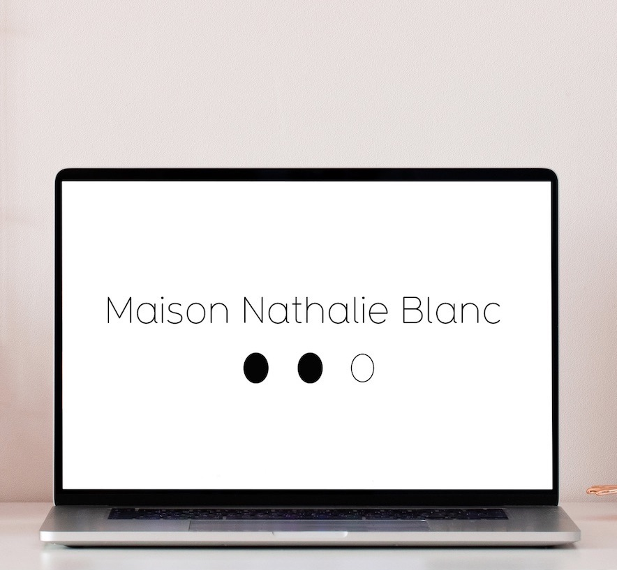
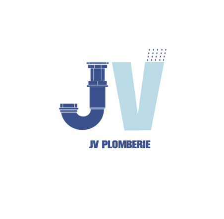

Les Vichyssoises
Identité visuelle & illustrations
mars-avril 2021

Série de collages surréalistes
2021

Collages dadaïstes pour Macon Lesquoy
Collages dadaïstes
décembre 2020-janvier 2021

Collages surréalistes pour Nike
Concept créatif autour du logo
2020

Identité visuelle pour la marque Brut
Réalisation charte graphique
mai 2020

Nathalie Blanc
Création logo et charte graphique
2016-2021

Label de musique Chimik
Création logo pour un label de musique
2015

Création de logo et charte graphique
Création logo
mars 2021